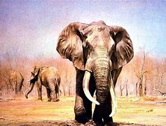

Elefante
Hipervínculos externos
Elefantes en peligro de extincion
caracteristcas sobre los elefantes
Hipervínculos Internos
Menú
por qué están los elefantes en peligro de extinción?
Tipos de elefantes en peligro de extinción
¿Cuántos elefantes quedan en el mundo?
Cambio climático
Pérdida y fragmentación del hábitat

por qué están los elefantes en peligro de extinción?
Todas las subespecies del elefante asiático están clasificadas en peligro de extinción por la Unión Internacional para la Conservación de la Naturaleza (UICN).
Tipos de elefantes en peligro de extinción
Antiguamente existían alrededor de 350 especies de elefantes en el mundo, sin embargo, con el paso del tiempo se han extinguido casi la totalidad de estas. Hasta hace apenas unos años, únicamente se distinguían dos especies de elefantes, el africano y el asiático, contando este último con tres subespecies. Sin embargo, recientes estudios [1] han llevado a los expertos a separar en dos especies diferenciadas los elefantes africanos de la sabana y los elefantes africanos del bosque, por lo que, en la actualidad, son tres las especies de este gran mamífero las que sobreviven, estando todas ellas amenazas:

¿Cuántos elefantes quedan en el mundo?
Como ya hemos comentado, según la IUCN, tanto el elefante asiático como el elefante africano de la sabana se encuentran en peligro de extinción, mientras que el elefante africano del bosque está en peligro crítico de extinción. En todas las especies se ha detectado una disminución continua del número de individuos maduros, un dato verdaderamente preocupante. Sin embargo, el dato más alarmante lo encontramos en el elefante del bosque africano, puesto que han descendido hasta un 86 % en los últimos 30 años, un dato que ha llevado a la organización a clasificarla en peligro crítico
Cambio climático
Las sequías ocasionadas por el cambio climático también provocan el fallecimiento de estos animales por la falta de alimento y agua.
Pérdida y fragmentación del hábitat
El desarrollo de áreas residenciales y de turismo en el hábitat de los elefantes ha ocasionado que las manadas deban desplazarse a lugares más remotos en un intento por conseguir el alimento que necesitan para sobrevivir.